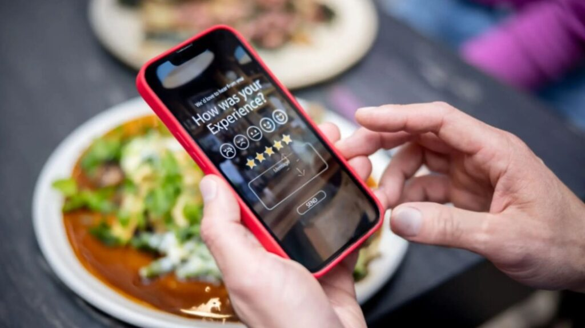
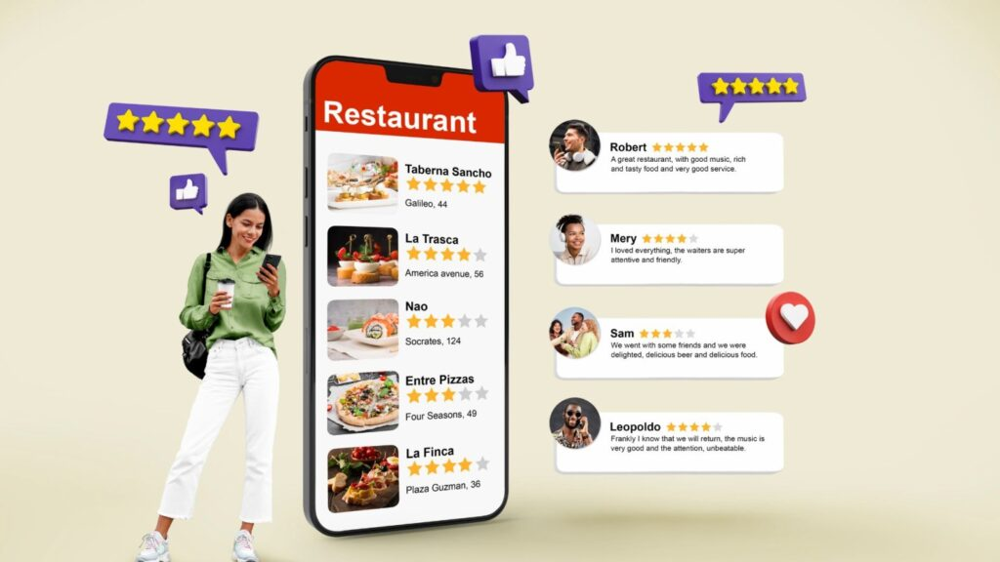
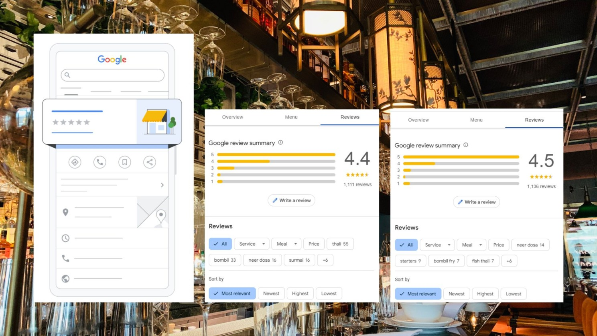

In the crowded restaurant space, Google Reviews are more than just ratings—they’re your digital word-of-mouth. With nearly 90% of diners relying on online reviews before deciding where to eat, leveraging them effectively can give your restaurant a competitive edge.
But it’s not just about gathering reviews—it’s about turning them into actionable strategies to drive customers through your doors. Here’s how:
1. Optimize Your Google Business Profile
Your Google profile is often the first thing potential customers see. Ensure it’s complete and visually appealing:
- Add high-quality images of your best dishes, interiors, and happy diners.
- Keep your details updated: address, hours, menu, and contact information.
- Highlight unique features like outdoor dining, live music, or kid-friendly options.
Pro Tip: Use keywords in your profile (e.g., “best Italian restaurant in Bandra”) to appear in relevant searches.
2. Actively Encourage Reviews (the Right Way)
Diners are more likely to leave a review if prompted at the right moment. Here’s how:
- On-site prompts: Place QR codes on receipts, tables, or takeaway bags with a simple call-to-action like, “Loved your meal? Leave us a review!”
- Post-visit follow-ups: Send personalized messages after their visit thanking them for dining and inviting feedback.
Important: Never offer discounts or freebies in exchange for reviews—it violates Google’s policies and can lead to penalties.
3. Respond Strategically to All Reviews

Engagement is key. Responding to reviews, both positive and negative, shows that you value customer feedback.
- For positive reviews: Acknowledge their compliments and invite them back with something specific, e.g., “We’re thrilled you loved the butter chicken! Hope to see you for our weekend brunch soon.”
- For negative reviews: Avoid being defensive. Apologize, address the issue, and share how you’re resolving it. For example:
Pro Tip: Reviews with responses are seen as more credible and can improve your search ranking.
4. Use Reviews to Identify Trends and Make Changes
Every review is a data point. Analyze your reviews regularly to spot patterns:
- Are customers consistently praising a specific dish? Highlight it on your menu or promotions.
- Are they flagging slow service or cleanliness issues? Address these operational gaps immediately.
Implementing changes based on reviews shows customers you’re listening and evolving.
5. Turn Reviews into Marketing Assets

Don’t let glowing reviews sit idle on Google. Amplify their impact by:
- Sharing them on social media with visuals of the reviewed dish or your restaurant.
- Adding them to your website as testimonials.
- Displaying them in-store, e.g., “Rated 4.8 stars by our diners on Google!”
Pro Tip: Highlight specific details in reviews that set you apart, like “amazing rooftop views” or “the best biryani in town.”
6. Use Google Reviews to Rank Higher Locally
Google prioritizes businesses with higher ratings and active engagement in local searches. To rank higher:
- Aim for a consistent flow of recent reviews. Stale profiles lose relevance.
- Use keywords naturally in your responses, e.g., “Thank you for visiting our rooftop café in Andheri!”
- Regularly update your profile with new photos and posts to show activity.
7. Run Campaigns Around Reviews

Engage your customers with creative campaigns tied to reviews:
- Feedback Fridays: Pick a random reviewer each week and feature them on your social media.
- Top Dish Challenge: Encourage customers to review their favourite dish for a chance to get featured.
- Thank You Rewards: Highlight and thank top reviewers in a public post to foster loyalty and encourage others to participate.
Why It Works
Restaurants with actively managed Google profiles and a strong review strategy enjoy higher foot traffic and better customer retention. Reviews aren’t just feedback—they’re your social proof, your marketing asset, and your competitive advantage.
Let SprintCo Help You Build a Destination That Stands Out
Great reviews start with great experiences. At SprintCo, we design spaces that inspire glowing feedback and turn first-time diners into loyal customers. Let’s create a restaurant worth raving about—contact us today.